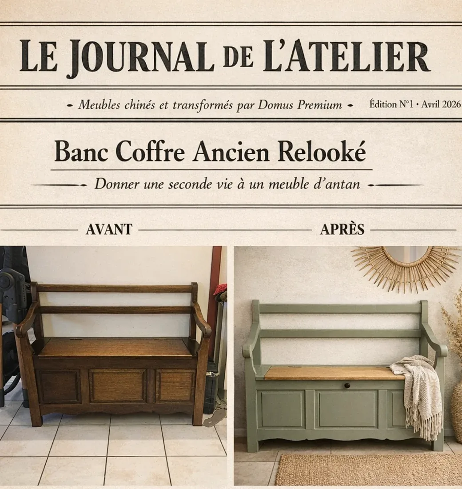

Atelier Domus
Le Journal de l’Atelier : le petit coin dédié aux meubles anciens remis au goût du jour. Une seconde vie, c’est possible !

Le Journal de l’Atelier : le petit coin dédié aux meubles anciens remis au goût du jour. Une seconde vie, c’est possible !
